Solving Thorny UX Problems for 20 Years
by untangling complex requirements and shepherding design solutions through to implementation
- Current:
- SaaS-based digital transformation project for federal case management within the U.S. Department of Justice.
- Previous:
- Healthcare, Developer Tools, Enterprise Systems.
Featured Case Study
Setup & Configuration Redesign
Overhauled a complex setup workflow that was blocking new customer adoption, making it self-guided and scalable.
- Role:
- Lead Product Designer
- Timeline:
- ~3 months
- Scope:
- UX, UI, Front-end, Product
- Product:
- Healthcare SaaS
Problem
The setup and configuration experience had become a major barrier to adoption.
- Built for a narrow clinical use case
- Expanded without rethinking structure
- Result: fragmented, confusing workflows
Business Impact
- Trial users struggled to complete setup
- Heavy reliance on training and documentation
- Friction slowed onboarding and sales
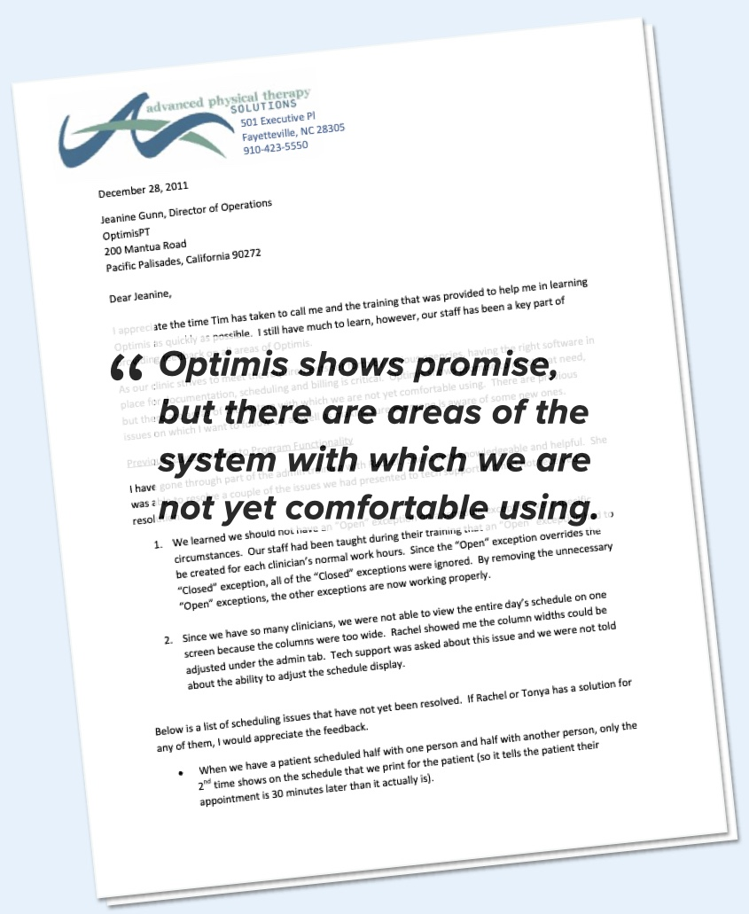
Process
1. Research and Discovery
I spoke to the software trainer and the Director of Operations to understand the users, their needs, and barriers to success.
I then grouped my findings into 3 categories of usability problems, in order of priority.
- Poor UX for frequent tasks
- Confusing terminology
- Complex billing rules and procedures
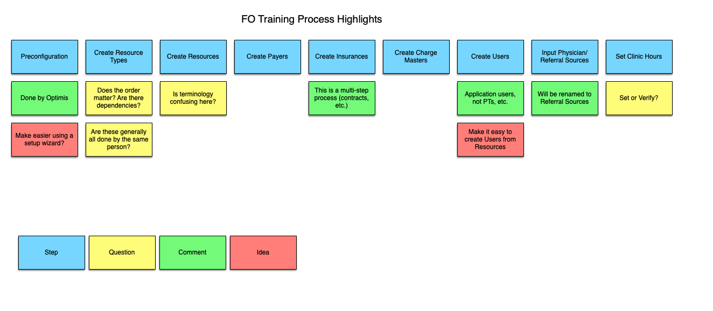
2. IA and Navigation Improvements
First I tried to think of alternate groupings of screens that would be more intuitive for the users. I went through several iterations of this using card sorts.
I then began translating those IA ideas into UI navigation concepts.
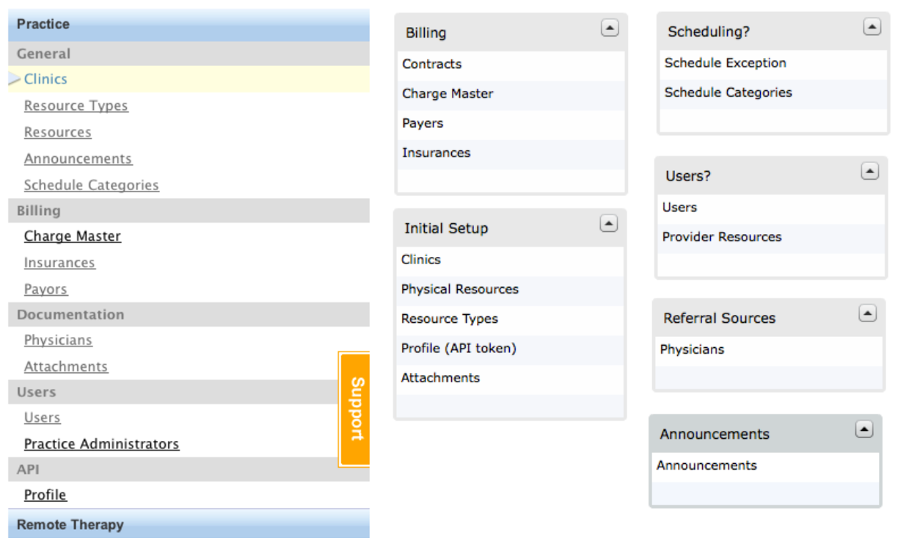
3. Adding Inline Help & Descriptive Text
I wanted to migrate as much of the critical knowledge that was in the documentation into the app.
The first step was to add description text to every page and optional help text for sections and tables.
I also showed how inline help text could be displayed.
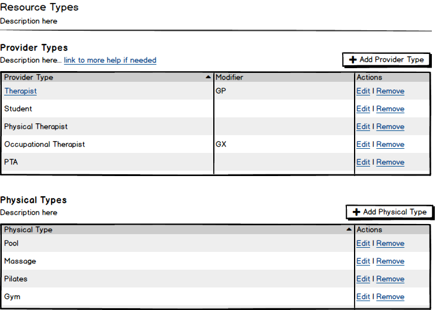
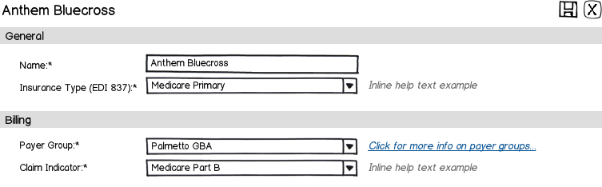
4. UX and UI Improvements
I cleaned up the tables and moved buttons to a more standard location. I changed the vague icons to descriptive text links.
I overhauled the forms that populated many of the pages. Changes included improving alignment and applying better section breaks, hierarchy, and headings.
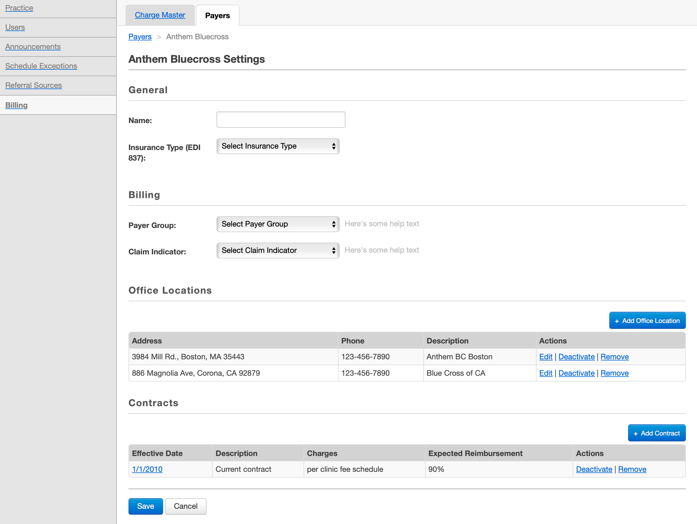
5. Building a Design System
I switched to a new web framework and worked with the marketing department to come up with styles for a new design system.
I translated all of my work to HTML and CSS and made sure that all UI components were covered by the design system.
I documented how to use the design system within the patterns I created.
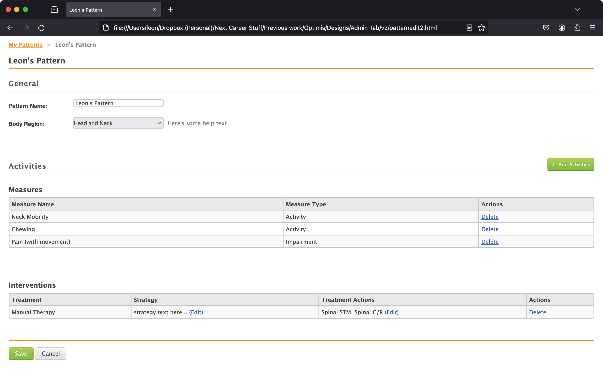
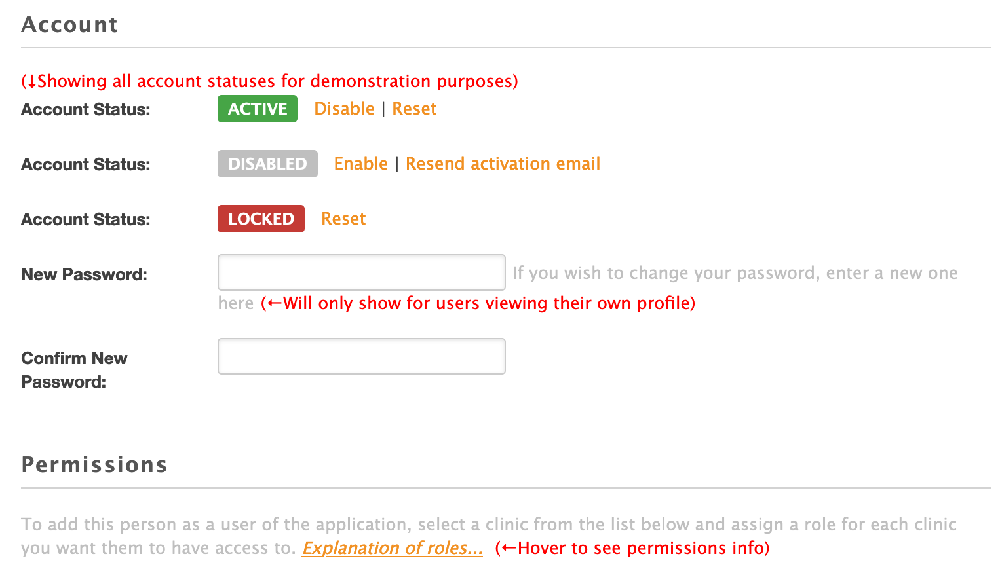
Result
Once all my front-end work was done, I uploaded it to a staging server for the developers to tackle.
I worked very closely with the developers during implementation to provide specification details, answer questions, and resolve last-minute challenges.
IA and Navigation
Before:
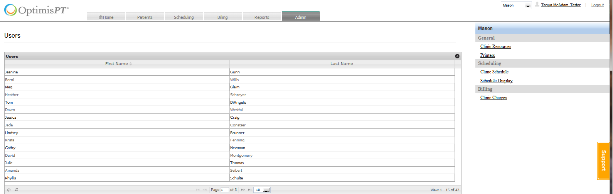
After:
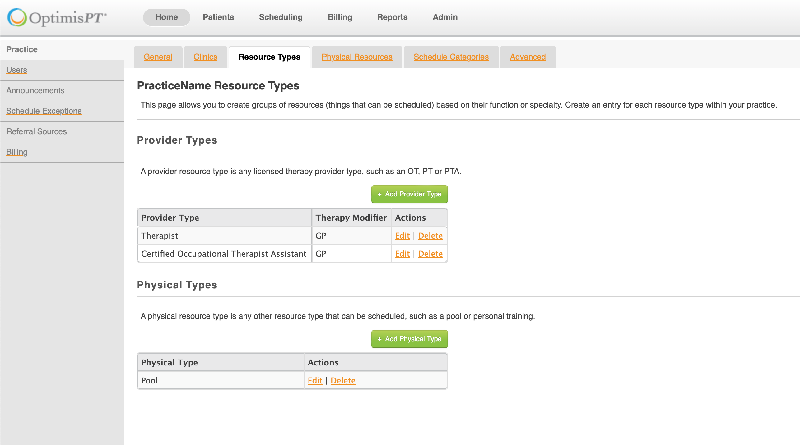
Action Tables
Before:
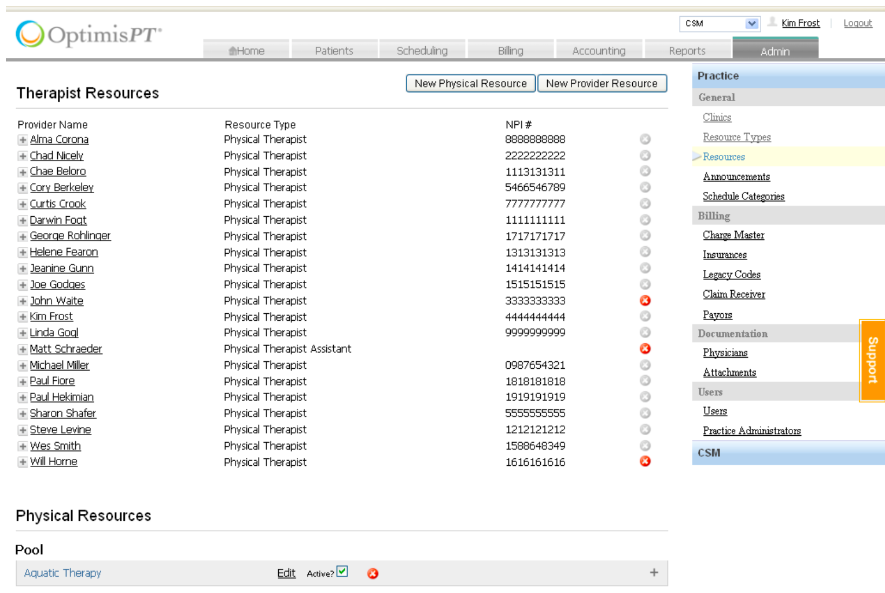
After:
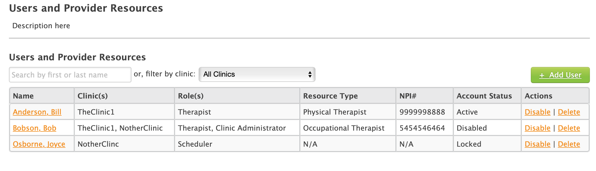
Common Form Pages
Before:
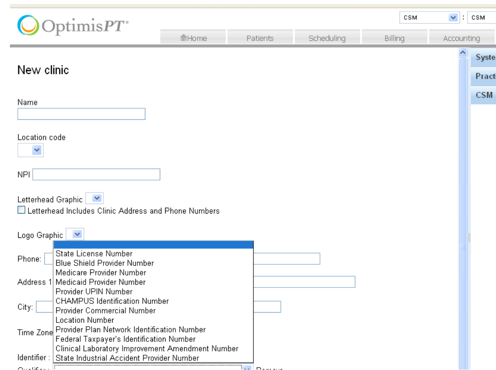
After:
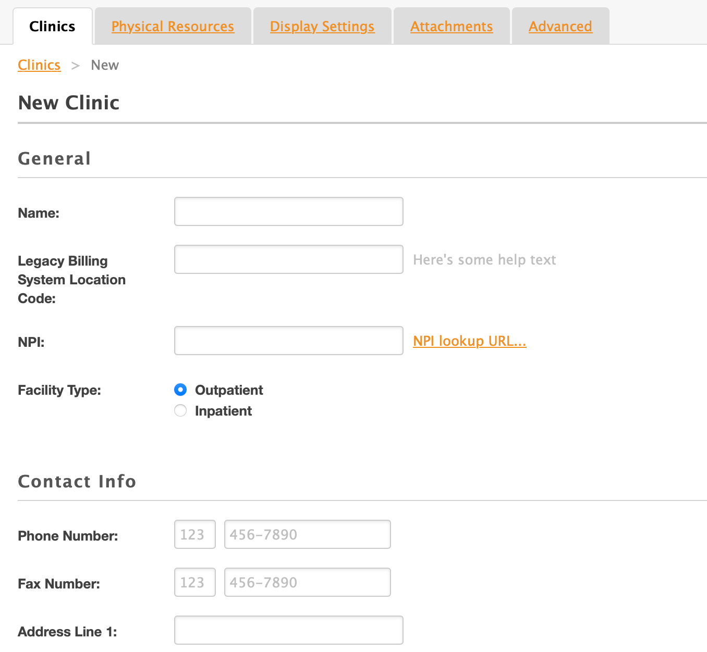
Billing Forms
Before:
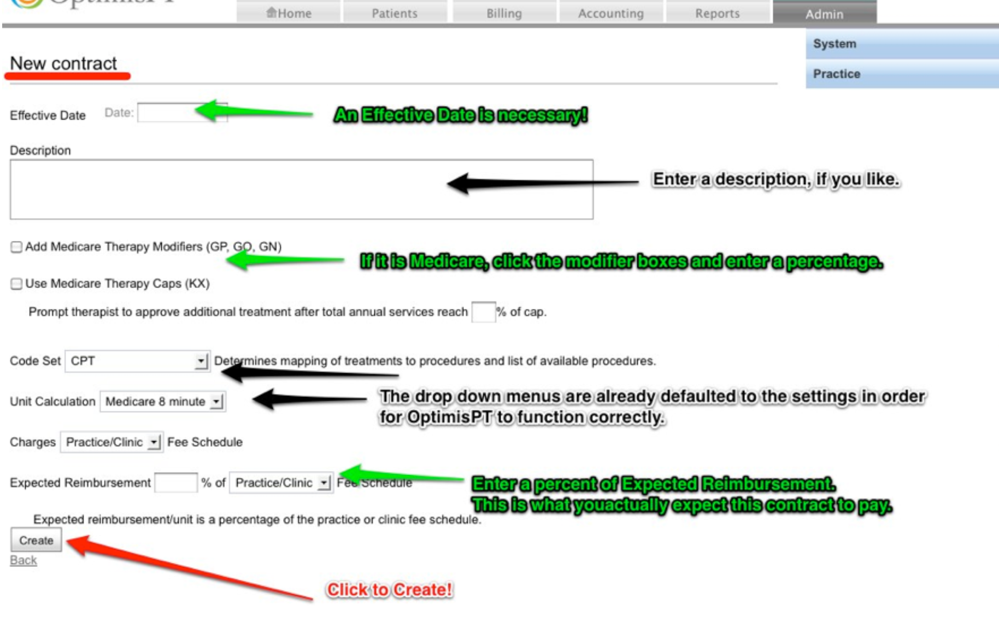
After:
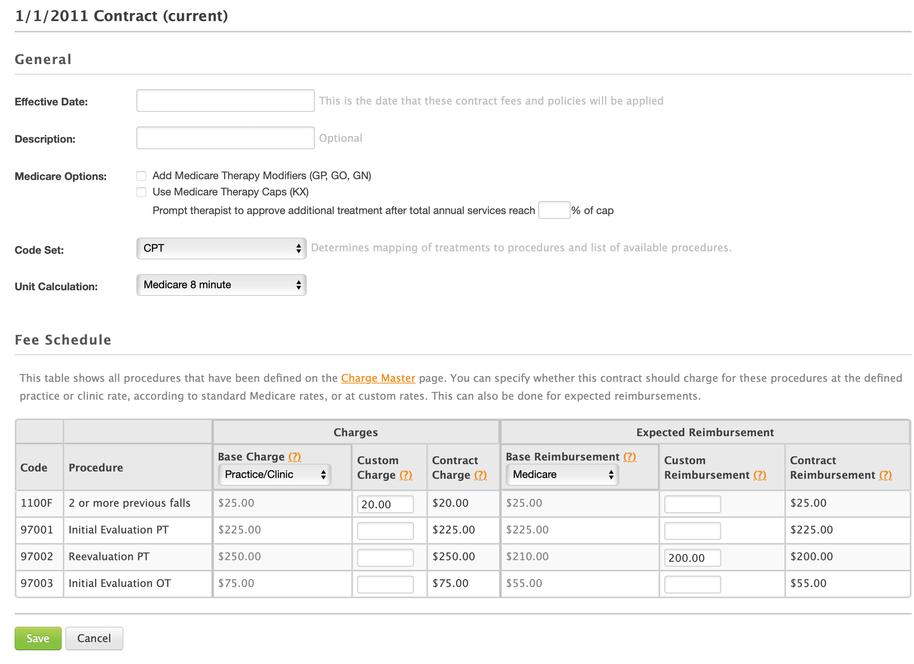
Impact
Customers were pleased with the changes, and the design system was later adoped across the entire product.
Wins
- Reduced onboarding friction
- Decreased reliance on training and documentation
- Improved clarity across workflows
- Enabled faster development with reusable patterns
Wishes
- Pilot and/or usability testing
- Better collaboration with Documentation team during and after release
- Follow-up surveys after implementation to track success and areas for improvement
Other Work
UI Design for Infection Prevention
A series of UI design projects to provide needed capabilities to hospital Infection Prevention specialists.
Agile User Stories and Design Specifications
Research, writing, and design for user stories and design specifications.
Wireframing for Everyone
A book I co-wrote and published with A Book Apart on demystifing interface design and communicating UI ideas through wireframes.
Live Wireframing Sessions
One-on-one online design consultations to help do-gooders bring their ideas to life.